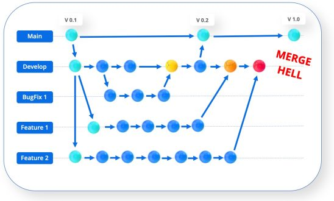
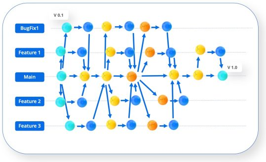
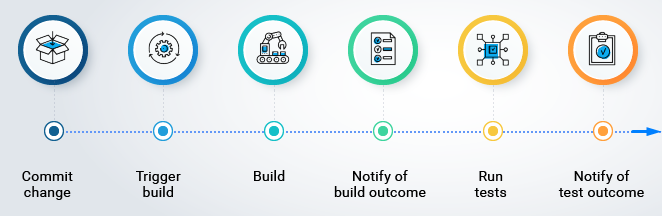

Continious Integration (CI)


"MERGE HELL"
How to avoid "merge hell"?
Merge more often in develop branch
BUT
How to check that we didn't break app with our code?
Check application steps:
- Build application
- Run tests
- Run linters
- Check types
1. It's time-consuming to do this operations every time
2. We have no guarantee that developer has completed all the checks
CI - SOLUTION
Provide a quick feedback loop on the quality of the software
Make the deployment process easily-repeatable
CI PIPLINE
The principles of Continuous Integration
- Commit to the mainline
- Maintain a single-source repository
- Automate the build
- Make builds self-testing
- Build quickly
- Test in a clone
- Fix broken builds immediately